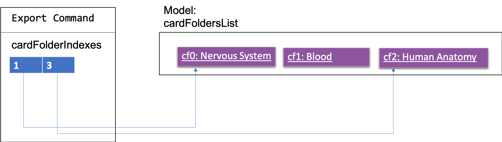

PROJECT: Know-It-All
Hello ! I am Yi Chong, a year 2 Computer Science student. I have worked on a few projects in the past, of which I have developed an android application and built a machine learning model to classify e-commerce products. My current areas of interest include Artificial Intelligence (AI) and Software Engineering. This project portfolio serves to document my contributions to Know-It-All; including the code base, developer and user guide.
Overview
The motivation behind this project came from a problem faced by Wei Jie, a medical student and friend of my group mate. Wei Jie is an avid user of flashcards for study. However, the trouble of carrying physical flashcards and the sheer amount of content recorded on flashcards has caused major inconveniences to Wei Jie.
As part of our Software Engineering project, we had the option to either enhance the existing address book software or morph it into another product. As such, our team decided to morph the existing product into a flashcard application for students like Wei Jie, who prefer flashcards as a study method but find using physical flashcards a major pain point.
This enhanced application helps students organize their digital flashcards neatly. The application also comes with a test feature; allowing users to test themselves on the flashcards created, a report feature; allowing them to view their performance for each folder and a import and export feature; which allows for the sharing of flashcards.
My role was to design and write the codes for the import and export features. The following sections illustrate these enhancements in more detail, as well as the relevant sections I have added to the user and developer guides in relation to these enhancements.
Legend
| This admonition contains important information pertaining to the usage of the commands. |
command: A monospace font has two meanings. For the user guide, it represents a command
that can be inputted into the command line and executed by the application. In the Developer guide,
it can represent methods, variables or classes found within the Java files in addition to command line
input by the user.
Summary of contributions
This section contains a summary of my contributions to the project; mainly the code and documentation for the import and export feature as well as contributions to the community.
-
Major enhancement: added the ability to import/export existing or new flashcards
-
What it does: The import command allows users to import flashcards from a a .csv file while the export command allows users to export flashcards as a .csv file.
-
Justification: These two complementary features improve the product significantly because users can now share their flashcards with others, saving time taken to create similar flashcards for the other user. Also, being able to import flashcards from a csv file provides users with a quicker alternative to create large numbers of flashcards.
-
Highlights: Although not technically challenging, there were many considerations that went into the design of the import/export feature. One of them was deciding the formatting of csv files. whether a user should be able to export multiple card folders into a single csv. Also, since commas were used within each card field as well, there was a need to ensure that the comma separated values are actually not part of the "commas" within the card field itself.
-
-
Code contributed: Here is the link to the code I contributed [Collated code]
-
Other contributions:
-
Enhancements to existing features:
-
Wrote additional tests for existing features to increase coverage from 78.379% to 81.079 (Pull requests #105)
-
-
Community:
-
Contributions to the User Guide
The user guide contains instructions needed to effectively use Know-It-All. The following is an excerpt from Know-It-All’s user guide, which contains the additions that I have made to the user guide.
Export flashcards : export
Exporting flashcards is a great way to start sharing your flashcards with others.
The export command creates a csv file containing the flashcards from the specified folder in your project root directory.
Format: export FOLDER_INDEX FILENAME [MORE_INDEXES]
|
The export command creates the new csv file in your project root directory.
i.e The directory where your .jar file is located. The import command imports csv files located in the same directory as well. |
| The current version does not support the importing and exporting of files outside of this directory |
-
You should key in indices corresponding to the folder index
-
Negative numbers are not allowed
Examples:
-
export 1 2 3
exports the first, second and third cardfolder in your home directory. Suppose that the first, second and third cardfolder corresponds to the card folder names :
Blood
Circulatory System
Cardiovascular
Then the following files Blood.csv, Circulatory System.csv and Cardiovascular.csv will be created in the project root directory.
Import flashcards : import
Besides being able to import flashcards exported by others, the import command provies a faster way of creating multiple flashcards.
You type your flashcards out on excel and later save it in your project root directory, allowing you to import it over to your application.
| The csv file imported should follow the format described below |
-
The first row of the csv file should have the following headers:
Question, Answer, Hints, Option, Option, Option.
-
Question and Answer are mandatory fields, and should not be left blank.
-
Hints can take 0 or 1 values only.
-
For MCQ cards, The csv file accepts up to 3 incorrect options per flashcard.
Format: import FILENAME
|
unlike the export command the importing of multiple csv files
is not supported in Know-It-All. Filename imported is case insensitive. |
Examples:
-
import Blood.csv
Imports blood csv file into Know-It-All. A new Blood cardfolder should be present in the home directory after execution of this command.
Contributions to the Developer Guide
The following shows my addition to Know-It-All’s developer guide for the import and export commmand.
Import/Export feature
Current Implementation
The Import and Export feature is facilitated by the Logic and model components, together with the addition of 3 new classes inside the csvmanager package defined under the storage package.
Logic
Similar to how the current commands are implemented, where each specific command inherits from the abstract class command, the Import and Export command likewise inherit from the command class.
Model
The model component supports the addition of a new object attribute CsvManager, that carries out the read and
write logic of cards to external files.
Additionally, model implements two new methods, Model#importCardFolders and Model#exportCardFolders.
These two methods further call the CsvManager API to read and write card folders.
Model also implements Model#setTestCsvPath and the Model#getDefaultPath which are only used during testing.
csvmanager package:
The csvmanager package contains all classes dealing with the reading and writing of card folders into and out to the model.
The classes include:
-
CsvManager- Main class responsible for the writing and reading of .csv files during the import and export of files -
CsvFile- Wrapper class for file name input by user -
CsvCommandsinterface - API for import/export method in CsvManager -
CsvUtils- Utility class containing the default path and test paths used by the application.
The main logic for the import / export command is carried out inside the CsvManager class specified by it’s
API CsvManager#writeFoldersToCsv and CsvManager#readFoldersToCsv.
Example Usage
-
User wants to export folders Human Anatomy and Nervous System. Suppose that these two folders index as shown on the main application screen is 1 and 3 respectively. The user types
export 1 3 -
The Export command parser extracts the indices, stores the indices into a
List<Integer>andExportCommandobject, which keeps track of the indices. -
The Export command calls executes, resulting in a call to the
Model#exportCardFoldersmethod. -
Model#exportCardFoldersmethod checks that all card folders specified by user exists within the model. With reference to the diagram below, we can see that the indices specified by the user (1 and 3) corresponds to the (i - 1) th indexes of the list of card folders in the model, where 1 < i ⇐ no.of card folders in model.
The method throwsCardFolderNotFoundExceptionif card folder index is not found in list. -
CsvManageris called to carry out the main logic of writing the card folders to file. File exported will be created in the project root directory.
Names of the files created will correspond to the names of their corresponding card folders.
i.eHuman Anatomy.csvandNervous System.csv -
User wants to import
Human Anatomy.csvfile.Human Anatomy.csvfile contains flashcards represented in csv file format. User typesimport Blood.csvcommand -
Import command parser extracts file name, wraps file into a
CsvFileobject and parses theCsvFileobject into an Import Command object. -
Logic unit executes the import command. The execute method makes a call to
Model#importCardFoldermethod. The model checks that the card folder to import does not already exist within the model. ThrowsDuplicateCardFolderExceptionif card folder already exists. -
CsvManager is called to carry out the main logic of reading card folders to file. File imported will be serialized into a
CardFolderobject and added to thefoldersvariable in model.
| Both Imported and Exported files have to be placed in the project root directory. |
The below diagram shows the sequence diagram for the Import/Export commands
CSV file structure
Example of a common cardfolder csv file, opened using microsoft excel.
Blood.csv
-
The first line of any file contains the headers for each card. These headers have to be present in the csv file. If not the import would not work.
-
Each row of the csv file starting from the second, represents a single flashcard.
-
Option headers i.e (Option,Option,Option) can be left blank or take on 1 value.
-
Hints header can take either 0 or 1 value.
Instructions for Manual Testing
-
Importing a folder
-
Prerequisites:
You must be outside a folder (status bar should readin home directory.
Ensure that you also have the file to import in the project root directory.
file has to have a .csv extension format.
The imported file has to comply with the csv file headers.
Compulsary fields, like Question and Answer should not be left blank.
folder should not already exist within the model. -
Test case:
import Blood.csv
Prerequisites: Ensure that Blood.csv exists within the project root directory.
Expected: Command box outputs a message "Successfully imported: Blood.csv" and a new folder with name Blood is added to the existing folders in the home directory, with the corresponding flashcards added to the folder -
Other incorrect commands to try:
import,import Blood.json
-
-
Exporting a folder
-
Prerequisites: You must be outside a folder (status bar should read
in home directory)
flashcard application -
Test case:
export 1
Prerequisites: You must have at least one folder existing in the application.
Expected: The command box outputs a message "Successfully exported card folders" and project root directory should contain ax.csvfile wherexis the name of the first folder in the application. -
Test case:
export 1 2 3
Prerequisites: You must have at least 3 card folders existing in the application.
Expected: The same message output in the command box as the previous test case and the corresponding filesx1.csv,x2.csvandx3.csvcreated in project root directory, wherex1,x2,x3corresponds to the name of the first, second and third folder -
Other incorrect commands to try:
export,export -1,export 12 13 14, where1213and14are non existent card folder indexes.
-
Design Considerations
Designing the import and export features required me to make decisions not just in code design, but also to enable users to have a smooth experience in being able to import and export their flashcards. . The following is a brief summary of my analysis and decisions.
Aspect: Which component responsible for import/export logic
-
Alternative 1 (current choice): Implement read and write card folders in StorageManager class
-
Pros: The most intuitive solution, since Storage involves read and write logic
-
Cons:
-
Either Logic and Model will be more coupled with storage. Storage also has more than one responsibility now.
-
-
-
Alternative 2:Implement read/write and other logic in another class. (Current)
-
Pros: Separate responsibilities of both Storage and Model. Model class can focus on the representation of the in-memory card folders and Storage class can focus on managing the internal card folder data (.json files)
-
Cons: More code to write. Storage class could possibly call the relevant API’s to convert .json file into .csv file
-
Aspect: Csv file design structure
-
Alternative 1: Export multiple card folders into a single file.
-
Pros: Saves user trouble of calling multiple import for files.
Each card folder is separated by a new line. -
Cons: Not a .csv file anymore. First line header would now specify cardfolder name before card headers, leading to unequal rows and columns
-
-
Alternative 2: Export each card folder into a single file (Current)
-
Pros: More flexibility for users to import desired card folders, since 1 cardfolder = 1 csv file. Files are also now correctly formatted as .csv file and Storage class can focus on managing the internal card folder data (.json files)
-
Cons: Slightly more work needed to import multiple card folders.
-